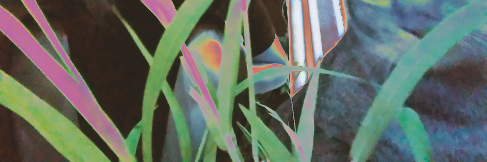

<
Biography
catwinglam@gmail.com
New media art artist and interactive designer. She graduated from the School of Creative Media at City University of Hong Kong, majoring in New Media (Bachelor of Arts and Science). Most of her works are inspired from daily life experience, by making use of environment, body sensation, and spatial as the medium,to express her artistic ideas with electronic devices, images, and programming devices.
She has received the Silver Award at the 19th ifva Festival (Interactive Media Category) in 2014, her works were exhibited in Art Basel Hong Kong (2021), PMQ (2019), Hong Kong City Hall (2018), JCCAC (2018) and Hong Kong Arts Centre (2014).
She has served as an installation art designer and engineer for several art projects, including "Emergency Kit & Wishing Pool", "Another Music in Anticlockwise", "Over The Ocean" and so on.
現為新媒體藝術創作者和互動設計師。她畢業自香港城市大學創意媒體學院，擅長新媒體藝術裝置。其創作取材多來自日常生活經驗，利用環境、體感、空間作媒介，以電子裝置、影像及程式裝置等手法表現她的藝術意念。
作品曾獲得「香港第十九屆ifva獨立短片及影像媒體節」互動媒體組別銀獎。其作品曾於不同展覽展出，包括香港巴塞爾藝術展(2021)、1a空間 (2020)、元創坊(2019)、香港大會堂(2018)和香港藝術中心(2014)等。
同時，她曾擔任多個藝術項目的裝置藝術設計及工程師，包括《急救箱與許願池》、《順時針逆行》、《 關於海的歌》等。
Exhibitions
2021
-1a space @ Art Basel 2021, Hong Kong Art Basel 2021, Hong Kong Convention and Exhibition Centre, Hong Kong
2020
-【Infection Invader】, 1a space, Cattle Depot Artist Village, Hong Kong
2019
-【Purr murmur】, Duo Exhibition, PMQ, Hong Kong
2018
-Algorithmic Art: Shuffling Space and Time, Hong Kong City Hall, Hong Kong
-JCCAC Festival 2018【Factory Forward】Group Exhibition, JCCAC, Hong Kong
2016
-School of Creative Media Annual 2016, Creative Media Centre, Hong Kong
2014
-InnoCarnival 2014, Science Park, Hong Kong
-Emerging Design Talents 2014: New Voices, HKDI, Hong Kong
-Pure Art Showcase, Chai Wan Mei, Art Basel 2014, Hong Kong
-The 19th ifva (Interactive Media Category) Finalist Works Exhibition, Pao Galleries, Hong Kong Arts Centre, Hong Kong
2013
City Impression@ Connectivity, City Gallery, Hong Kong Planning Department, Hong Kong
2012
- Exhibition of Secondary School Student’s Creative Visual Arts Work 2011/12
- School Art Marathon, JCCAC, Hong Kong
.
Performance
2016
-Performance in 8th Arts Ambassadors-in-School cum Outstanding Arts Teachers Recognition Ceremony
.
Awards
2015
HKSAR Government Scholarship
-Talent Development Scholarship
2014
19th Hong Kong Independent Short Film and Video Awards (ifva)
-Silver Award in Interactive Media Category